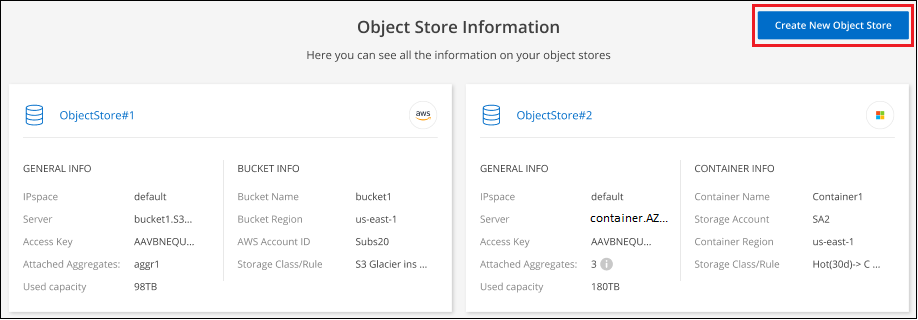
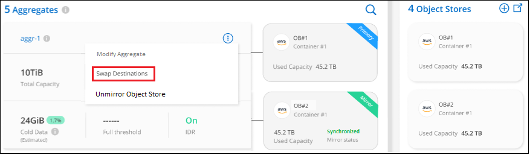

Demander de modifier un document
Demander de modifier un document Modifier sur GitHub
Modifier sur GitHub Guide des contributeurs
Guide des contributeursGestion du stockage objet utilisé pour le Tiering des données
Contributeurs
Une fois que vous avez configuré vos clusters ONTAP sur site pour hiérarchiser les données sur un stockage objet spécifique, vous pouvez effectuer d’autres tâches de stockage objet. Vous pouvez ajouter un nouveau stockage objet, mettre en miroir vos données hiérarchisées vers un stockage objet secondaire, échanger le stockage objet principal et miroir, supprimer un magasin d’objets en miroir d’un agrégat, et plus encore.
Affichage des magasins d’objets configurés pour un cluster
Il serait intéressant de voir tous les magasins d’objets qui ont été configurés pour le cluster et les agrégats auxquels ils sont rattachés. NetApp Cloud Tiering fournit ces informations pour chaque cluster.
-
Dans Tableau de bord des clusters, cliquez sur l’icône de menu d’un cluster et sélectionnez Info magasin d’objets.
-
Consultez les détails sur les magasins d’objets.
Dans cet exemple, un magasin d’objets Amazon S3 et Azure Blob est connecté à plusieurs agrégats sur un cluster.
Ajout d’un nouveau magasin d’objets
Vous pouvez ajouter un nouveau magasin d’objets qui sera disponible pour les agrégats de votre cluster. Une fois cette opération créée, vous pouvez la relier à un agrégat.
-
Dans Tableau de bord des clusters, cliquez sur l’icône de menu d’un cluster et sélectionnez Info magasin d’objets.
-
Dans la page informations sur le magasin d’objets, cliquez sur Créer un nouveau magasin d’objets.

L’assistant de stockage d’objets démarre. L’exemple ci-dessous montre comment créer un magasin d’objets dans Amazon S3.
-
Définir le nom de stockage d’objet : saisissez un nom pour ce stockage d’objet. Il doit être unique à partir de tout autre stockage objet que vous pouvez utiliser avec des agrégats sur ce cluster.
-
Sélectionnez fournisseur : sélectionnez le fournisseur, par exemple Amazon Web Services, puis cliquez sur Continuer.
-
Suivez les étapes des pages Créer un stockage objet :
-
Compartiment S3 : ajoutez un nouveau compartiment S3 ou sélectionnez un compartiment S3 existant commençant par le préfixe fabric-pool. Entrez ensuite l’ID de compte AWS qui donne accès au compartiment, sélectionnez la région du compartiment, puis cliquez sur Continuer.
Le préfixe fabric-pool est requis car la stratégie IAM pour le connecteur permet à l’instance d’effectuer des actions S3 sur les compartiments nommés avec ce préfixe exact. Par exemple, vous pouvez nommer le compartiment S3 fabric-pool-AFF1, où AFF1 est le nom du cluster.
-
Cycle de vie des classes de stockage : le Tiering dans le cloud gère les transitions de cycle de vie de vos données hiérarchisées. Les données commencent dans la classe Standard, mais vous pouvez créer une règle pour déplacer les données vers une autre classe après un certain nombre de jours.
Sélectionnez la classe de stockage S3 vers laquelle vous souhaitez transférer les données hiérarchisées et le nombre de jours avant le déplacement des données, puis cliquez sur Continuer. Par exemple, la capture d’écran ci-dessous montre que les données hiérarchisées sont déplacées de la classe Standard à la classe Standard-IA après 45 jours dans le stockage d’objets.
Si vous choisissez conserver les données dans cette classe de stockage, les données restent dans la classe de stockage Standard et aucune règle n’est appliquée. "Voir classes de stockage prises en charge".

Notez que la règle du cycle de vie est appliquée à tous les objets du compartiment sélectionné.
-
Informations d’identification : saisissez l’ID de clé d’accès et la clé secrète pour un utilisateur IAM disposant des autorisations S3 requises, puis cliquez sur Continuer.
L’utilisateur IAM doit se trouver dans le même compte AWS que le compartiment que vous avez sélectionné ou créé sur la page compartiment S3. Reportez-vous aux autorisations requises dans la section relative à l’activation de la hiérarchisation.
-
Cluster Network : sélectionnez l’IPspace ONTAP à utiliser pour se connecter au stockage objet, puis cliquez sur Continuer.
Le choix du bon IPspace garantit que Cloud Tiering peut établir une connexion de ONTAP au stockage objet de votre fournisseur cloud.
-
Le magasin d’objets est créé.
Vous pouvez désormais rattacher le magasin d’objets à un agrégat de votre cluster.
Association d’un second magasin d’objets à un agrégat pour la mise en miroir
Vous pouvez associer un second magasin d’objets à un agrégat pour créer un miroir FabricPool afin de hiérarchiser de manière synchrone les données sur deux magasins d’objets. Vous devez disposer d’un magasin d’objets déjà associé à l’agrégat. "En savoir plus sur les miroirs FabricPool".
Lors de l’utilisation d’une configuration MetroCluster, il est recommandé d’utiliser des magasins d’objets dans le cloud public situés dans des zones de disponibilité différentes. "Pour en savoir plus sur les exigences MetroCluster, consultez la documentation ONTAP".
Lorsque vous utilisez StorageGRID comme magasin d’objets dans une configuration MetroCluster, les deux systèmes ONTAP peuvent effectuer un Tiering FabricPool sur un seul système StorageGRID. Chaque système ONTAP doit transférer les données vers différents compartiments.
-
Dans Cluster Dashboard, cliquez sur Advanced Setup pour le cluster sélectionné.

-
Dans la page Configuration avancée, faites glisser le magasin d’objets que vous souhaitez utiliser vers l’emplacement du magasin d’objets miroir.

-
Dans la boîte de dialogue attacher un magasin d’objets, cliquez sur attacher et le second magasin d’objets est attaché à l’agrégat.

L’état miroir apparaît comme « synchronisation en cours » pendant la synchronisation des 2 magasins d’objets. L’état passe à « synchronisé » lorsque la synchronisation est terminée.
Permutation du magasin d’objets principal et miroir
Vous pouvez permuter le magasin d’objets principal et le magasin d’objets miroir d’un agrégat. Le miroir du magasin d’objets devient le miroir principal et le miroir primaire d’origine devient le miroir.
-
Dans Cluster Dashboard, cliquez sur Advanced Setup pour le cluster sélectionné.
-
Dans la page Configuration avancée, cliquez sur l’icône de menu de l’agrégat et sélectionnez Permuter destinations.

-
Approuvez l’action dans la boîte de dialogue et les magasins d’objets primaires et miroirs sont échangés.
Suppression d’un magasin d’objets en miroir d’un agrégat
Si vous n’avez plus besoin d’effectuer la réplication vers un autre magasin d’objets, vous pouvez supprimer un miroir FabricPool.
-
Dans Cluster Dashboard, cliquez sur Advanced Setup pour le cluster sélectionné.
-
Dans la page Configuration avancée, cliquez sur l’icône de menu de l’agrégat et sélectionnez Unmirror Object Store.

Le magasin d’objets en miroir est supprimé de l’agrégat et les données hiérarchisées ne sont plus répliquées.

|
Lorsque vous supprimez le magasin d’objets miroir d’une configuration MetroCluster, vous êtes invité à spécifier si vous souhaitez également supprimer le magasin d’objets principal. Vous pouvez choisir de conserver le magasin d’objets principal rattaché à l’agrégat, ou de le supprimer. |
Migration des données hiérarchisées vers un autre fournisseur de cloud
NetApp Cloud Tiering vous permet de migrer facilement vos données hiérarchisées vers un autre fournisseur cloud. Par exemple, pour migrer d’Amazon S3 vers Azure Blob, vous pouvez suivre les étapes indiquées ci-dessus dans l’ordre suivant :
-
Ajoutez un magasin d’objets Azure Blob.
-
Attacher ce nouveau magasin d’objets en tant que miroir à l’agrégat existant.
-
Permuter les magasins d’objets principal et miroir.
-
Annulez la mise en miroir du magasin d’objets Amazon S3.